9月7日STl图纸文件分享
yl7j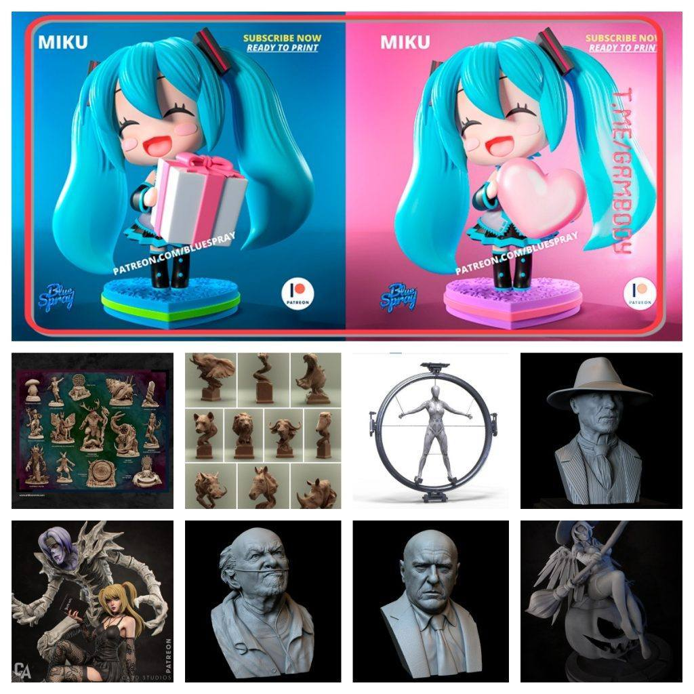
1.初音，Q版的比较平易近人，简单有趣。
链接：https://pan.baidu.com/s/1b3jSShr0Kn1yOIchlW1K5Q
提取码：yl7j
2.这组素材很好，二创佳品。
链接：https://pan.baidu.com/s/10XM5XnpXxPwTK9Ue2DO9ZA
提取码：86do
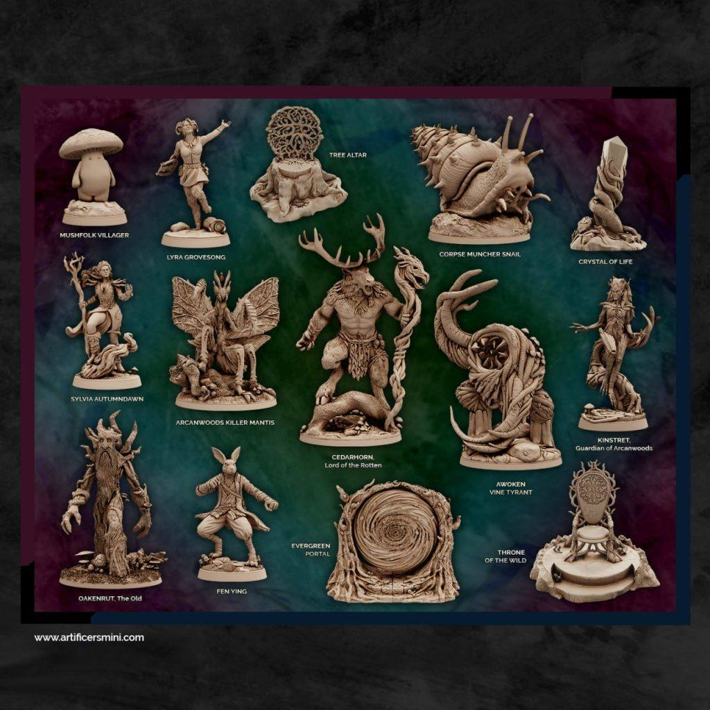
3.一组动物头雕像，如果是工作室来用这组会做很多不错的课题，你们会怎么做呢。
链接：https://pan.baidu.com/s/1dWbqDQ1BfRcfW7Xi0hOdsg
提取码：dx3j
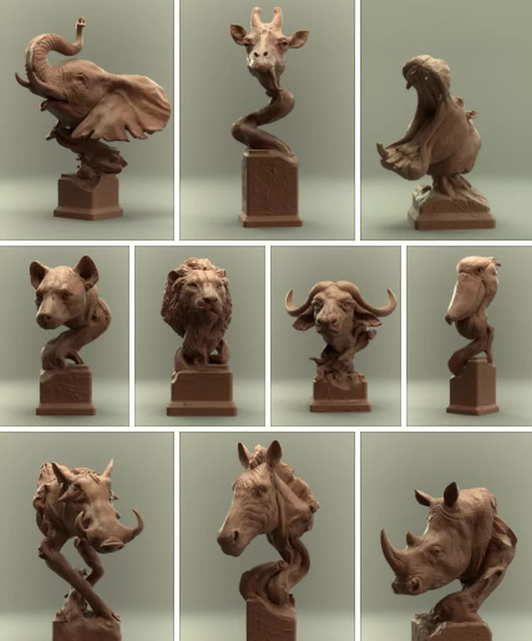
4.看过西部世界的话应该知道这是个啥，需要注意，建议用光固化，如果fdm,你需要打印大些的尺寸。
链接：https://pan.baidu.com/s/11Y46spJjHVqDzfrrpvSVEQ
提取码：wm5t
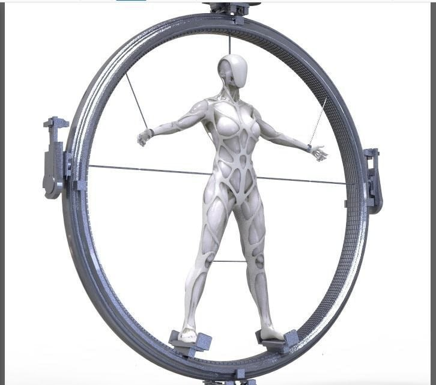

5.三个精雕头像，来自西部世界和绝命毒师，叮当叔确实有实力。
链接：https://pan.baidu.com/s/1CBoni8yzQlS0IsOyrvvKkA
提取码：08rj
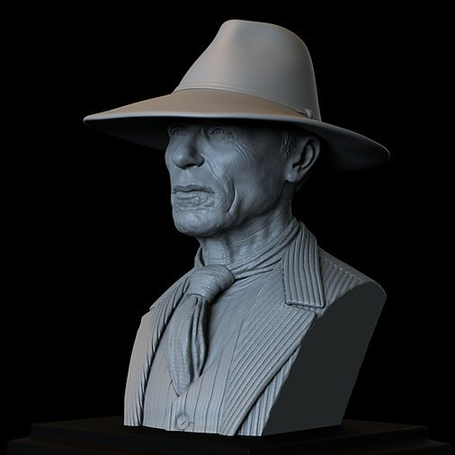
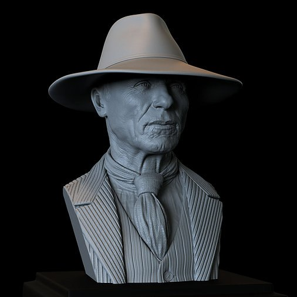


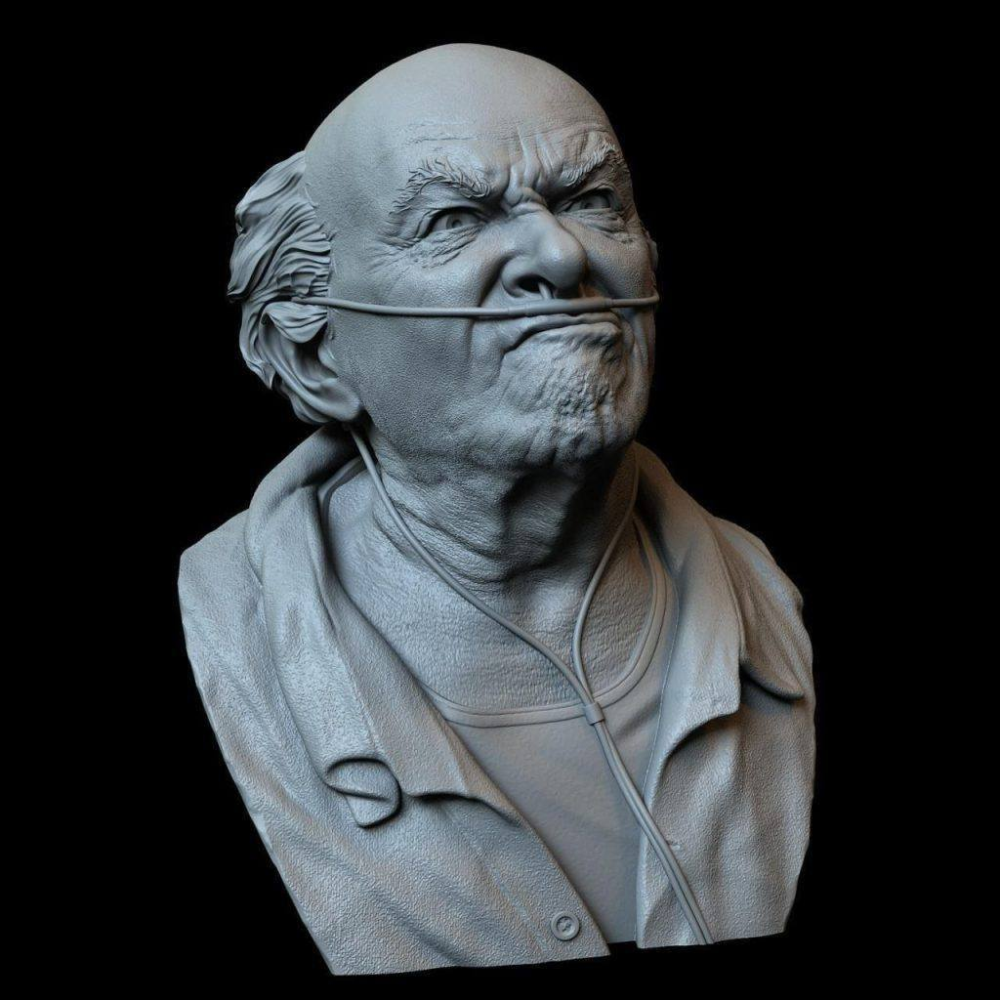
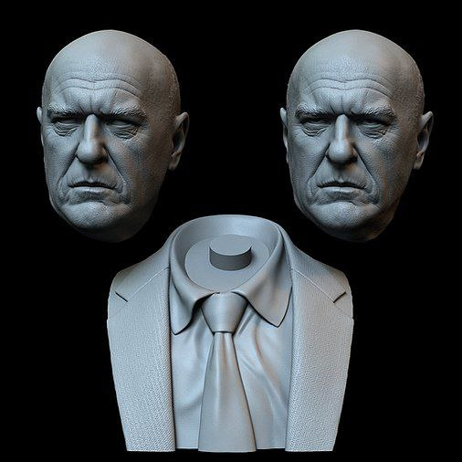

6.万圣节多备一些素材，也许是扫帚或者南瓜。
链接：https://pan.baidu.com/s/1w5LceMCF9qbc-AoBkrobBw
提取码：wmnh


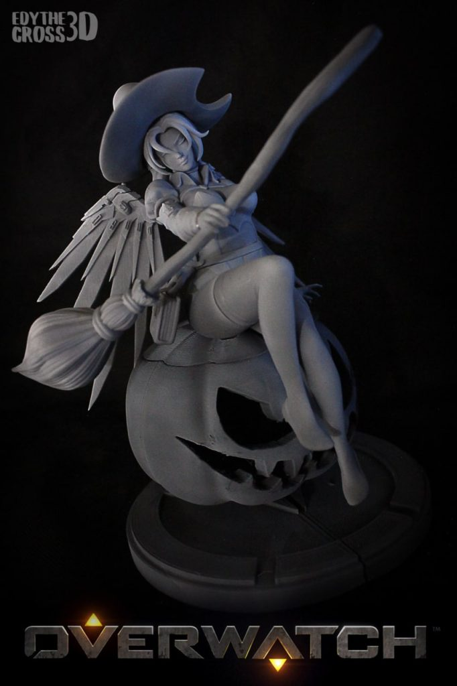
7.死亡笔记——弥海砂，她的结局是怎样来着？这组造型不错。
链接：https://pan.baidu.com/s/17jgHrwg_KO9OhRQYYHCDPA
提取码：lv77
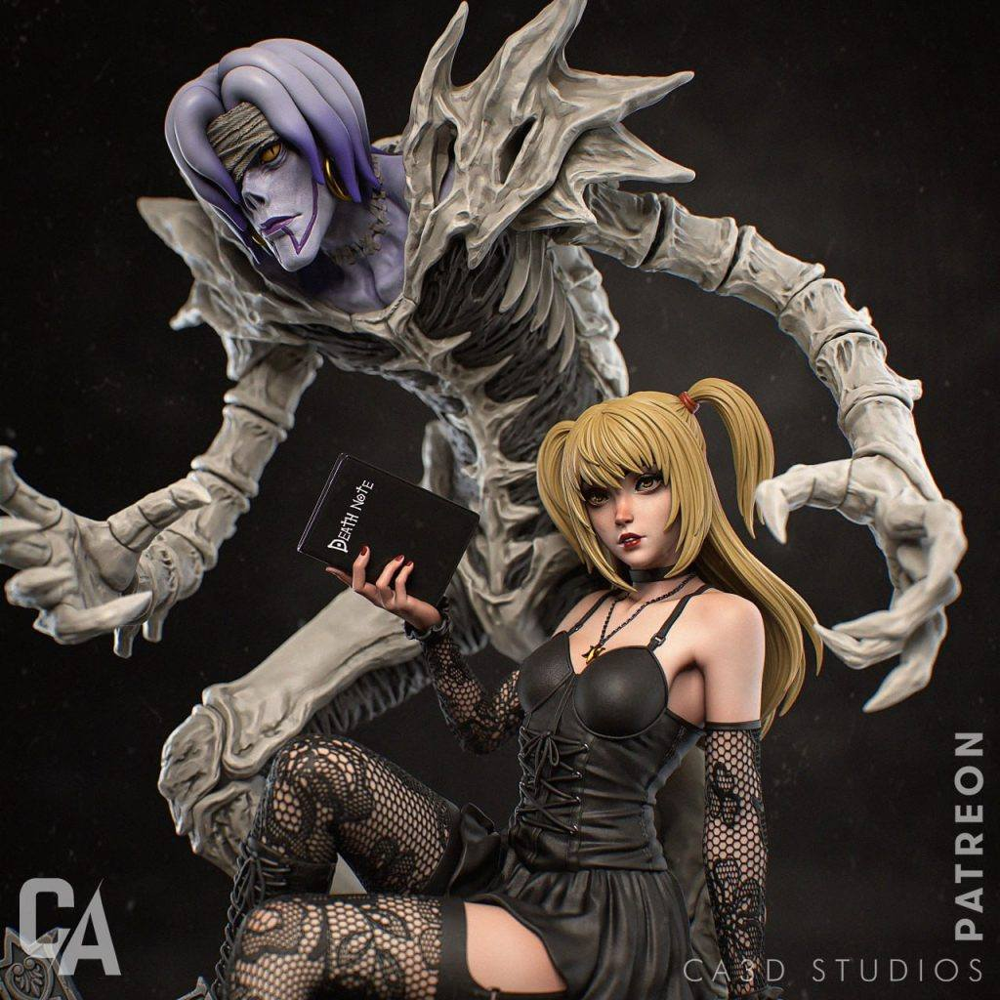
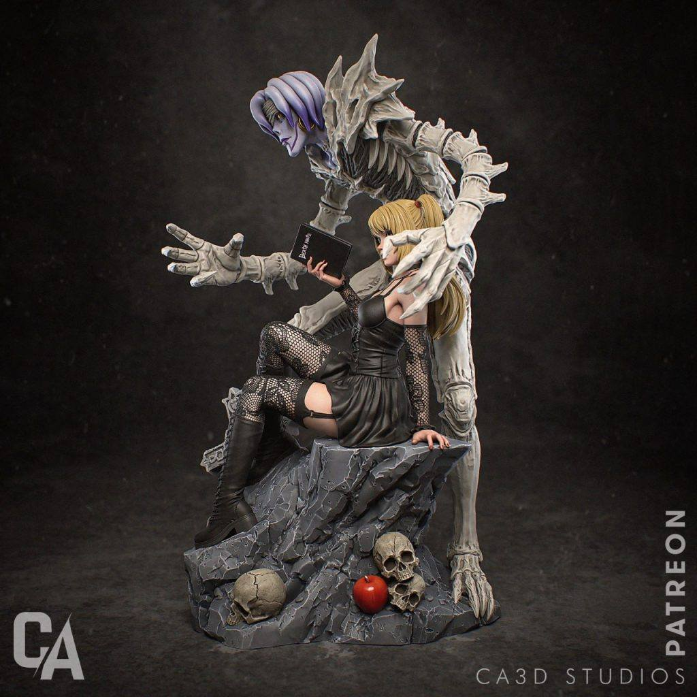
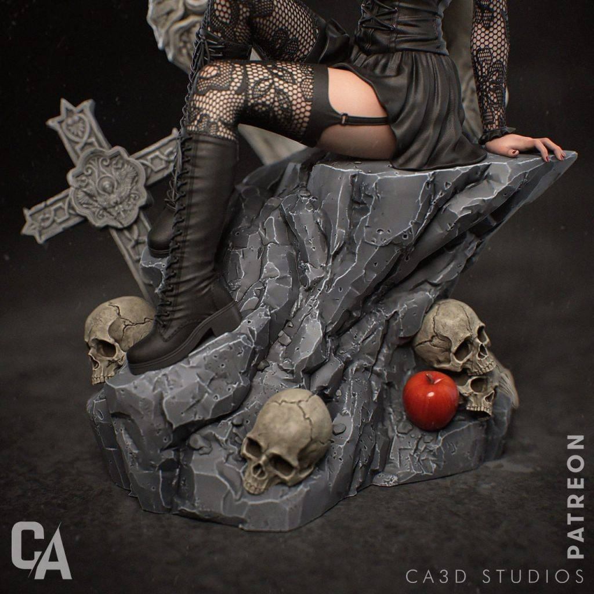